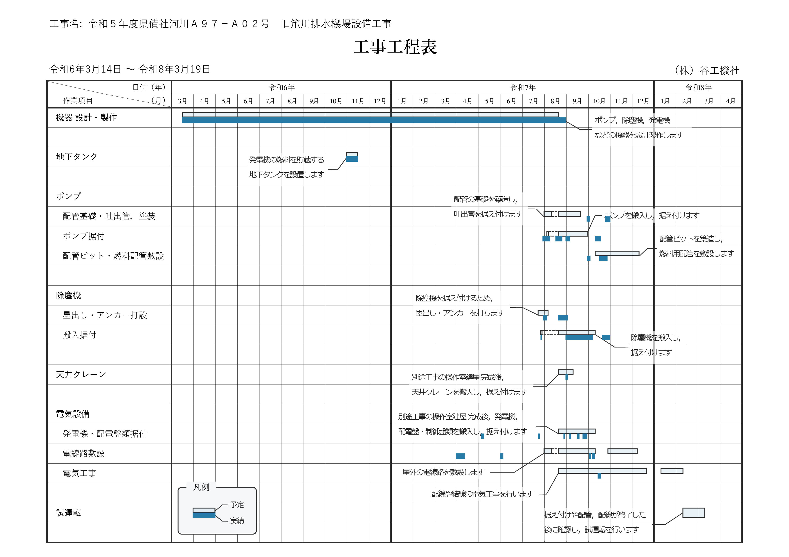

【工事の予定】
《今月・今週の予定》
| 月日 | 作業予定 | 備 考 |
|---|---|---|
| 01-20（月） | 準備・設計 | （現地作業はありません） |
| 01-21（火） | 準備・設計 | （現地作業はありません） |
| 01-22（水） | 準備・設計 | （現地作業はありません） |
| 01-23（木） | 準備・設計 | （現地作業はありません） |
| 01-24（金） | 準備・設計 | （現地作業はありません） |
| 01-25（土） | 休み | |
| 01-26（日） | 休み |
| 月日 | 作業予定 | 備 考 |
|---|---|---|
| 01-27（月） | 準備・設計 | （現地作業はありません） |
| 01-28（火） | 準備・設計 | （現地作業はありません） |
| 01-29（水） | 準備・設計 | （現地作業はありません） |
| 01-30（木） | 準備・設計 | （現地作業はありません） |
| 01-31（金） | 準備・設計 | （現地作業はありません） |
| 02-01（土） | 休み | |
| 02-02（日） | 休み |
| 月日 | 作業予定 | 備 考 |
|---|---|---|
| 02-03（月） | 準備・設計 | （現地作業はありません） |
| 02-04（火） | 準備・設計 | （現地作業はありません） |
| 02-05（水） | 準備・設計 | （現地作業はありません） |
| 02-06（木） | 準備・設計 | （現地作業はありません） |
| 02-07（金） | 準備・設計 | （現地作業はありません） |
| 02-08（土） | 休み | |
| 02-09（日） | 休み |
| 月日 | 作業予定 | 備 考 |
|---|---|---|
| 02-10（月） | 準備・設計 | （現地作業はありません） |
| 02-11（火） | 休み | （建国記念の日） |
| 02-12（水） | 準備・設計 | （現地作業はありません） |
| 02-13（木） | 準備・設計 | （現地作業はありません） |
| 02-14（金） | 準備・設計 | （現地作業はありません） |
| 02-15（土） | 休み | |
| 02-16（日） | 休み |
《工事全体の予定》
この工事の全体工程表を下に示します．
